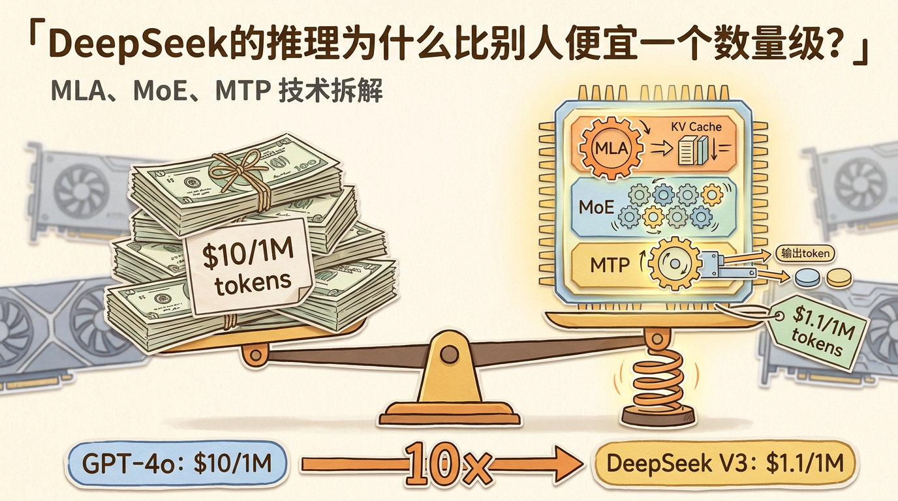
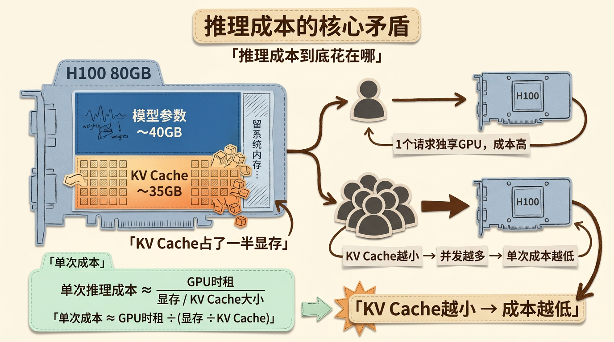
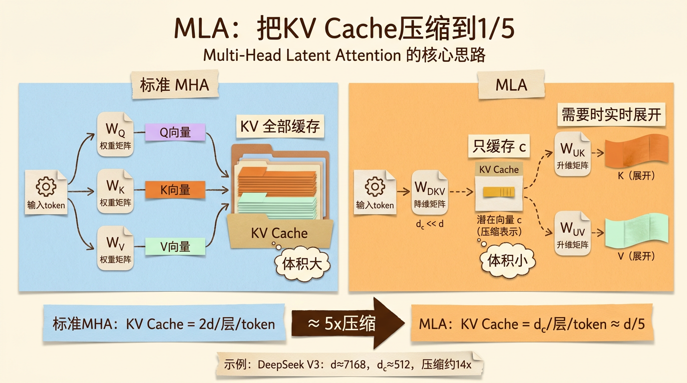
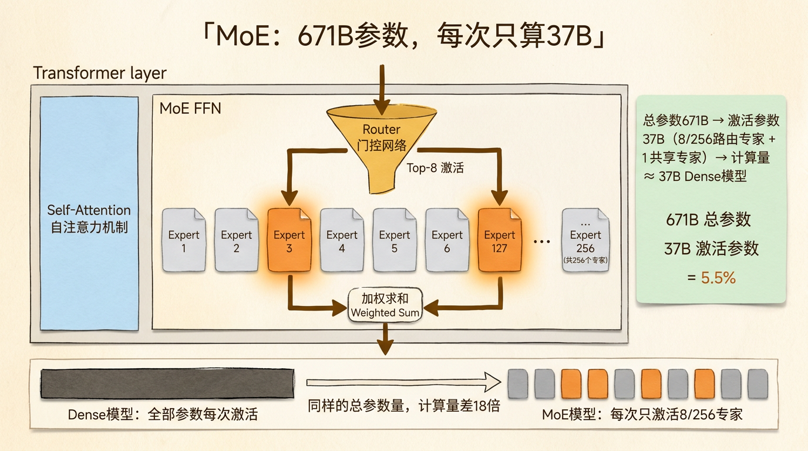
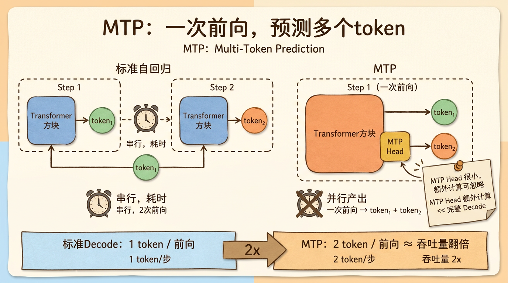
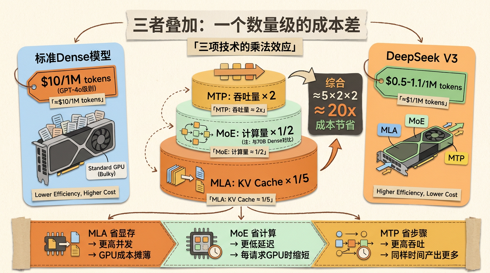
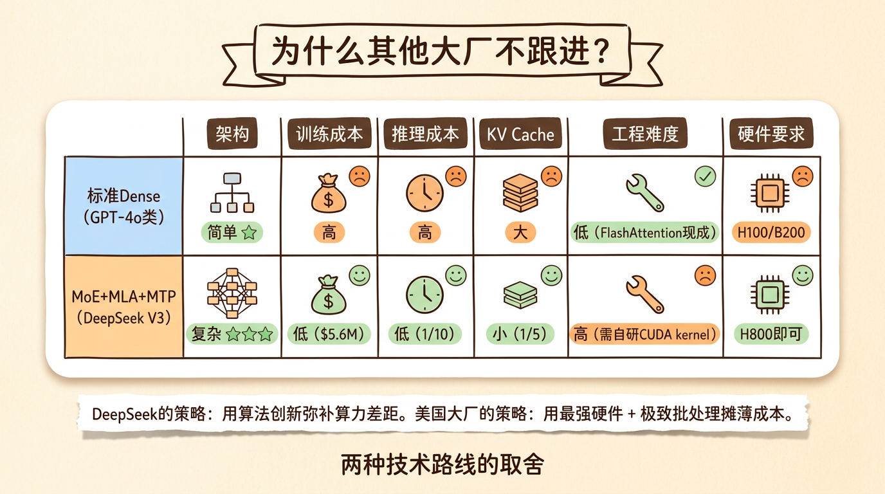

DeepSeek的推理为什么比别人便宜一个数量级？——MLA、MoE、MTP技术拆解
如果你最近调过各家大模型的API，你一定注意到一件事。
GPT-4o 的价格大概是输入 $2.5/1M token，输出 $10/1M token。Claude Opus 4 更贵一些。但 DeepSeek V3 呢？输入 $0.27/1M token，输出 $1.1/1M token。输出价格差了将近10倍。
这就引出一个很自然的问题：DeepSeek 凭什么便宜这么多？是补贴烧钱？还是有什么硬核的技术突破？
答案在后半段。DeepSeek 的推理成本优势来自三项核心技术的组合：MLA（Multi-Head Latent Attention，多头潜在注意力）、MoE（Mixture of Experts，专家混合）和 MTP（Multi-Token Prediction，多token预测）。
这三项技术单独拿出来，每一项都能省一些成本。组合在一起，打出了一个数量级的成本差。
这篇文章把这三项技术从头拆一遍。读完你会知道，不是 DeepSeek 在烧钱补贴——是它的推理架构确实和 GPT-4o 不在同一代。

先搞清楚：推理成本到底花在哪
在拆 MLA 之前，先得回答一个更基础的问题：一次推理到底哪里花钱？
你在 API 上花的每一分钱，对应的是 GPU 上的一次计算。而 GPU 上最贵的东西，不是计算本身，是显存带宽。
回顾一下 Transformer 的推理过程。当模型收到你的输入 token 序列后，分两个阶段工作。
Prefill 阶段：所有输入 token 并行通过 Transformer 各层，一次性算出每个 token 在每一层的 Key 和 Value 向量，存进 KV Cache。这个阶段是算力密集的——GPU 的 Tensor Core 被喂饱，利用率高。
Decode 阶段：每生成一个新 token，都要用新 token 的 Query 去和 KV Cache 里所有历史 token 的 Key/Value 做注意力计算。这个阶段是显存带宽密集的——每次生成都要把整个 KV Cache 从显存读到计算单元，搬运数据的开销远大于计算本身。
问题就出在这个 KV Cache 上。
KV Cache 的大小跟四个因素成正比：层数 × 隐藏维度 × 上下文长度 × 批处理大小。一个 70B 参数的标准 Transformer 模型，在 8K 上下文、batch=32 的场景下，KV Cache 可以轻松占满 80GB 显存。
而 GPU 的显存是有限的。H100 单卡 80GB，H200 141GB。模型参数本身就要占掉一半以上，留给 KV Cache 的空间非常紧张。
推理成本的核心矛盾就在这：KV Cache 越大 → 单卡能同时服务的请求越少 → 摊到每个请求上的 GPU 成本越高。
如果你能把 KV Cache 缩小 10 倍，一张卡就能服务 10 倍的请求。单次推理的成本就降下来了。
DeepSeek 的 MLA 干的就是这件事。

MLA：把 KV Cache 压缩到原来的 1/5
标准的多头注意力（MHA）是怎么产生 KV Cache 的？
假设当前这一层的输入隐藏维度是 d（比如 4096）。对每个 token，模型会通过三个权重矩阵分别算出 Q、K、V 向量：
1 | Q = x · W_Q （维度: d → d_q） |
其中 W_Q、W_K、W_V 是三个可训练的权重矩阵。对于标准的 MHA，d_q = d_k = d_v = d。每个 token 每层产生的 KV 向量总大小就是 2 × d 个元素。如果用 bf16 存储（每个元素 2 字节），一个 token 一层的 KV Cache 就是 4 × d 字节。
但问题来了：K 和 V 这两个向量，真的是独立的吗？
MLA 的核心洞察是：K 和 V 不是独立的信息源，它们共享很大一部分底层表示。与其分别从 x 投影到 K 和 V，不如先把 x 压缩到一个低维的”潜在空间”，再从潜在空间分别展开成 K 和 V。
具体来说，MLA 的做法是：
第一步，把输入 x 通过一个降维矩阵 W_DKV 压缩成一个低维向量 c（维度 d_c << d）：
1 | c = x · W_DKV （维度: d → d_c） |
这个 c 就是所谓的”潜在向量”（Latent Vector）。d_c 的大小通常是 d 的 1/3 到 1/5。比如 DeepSeek V3 里，d ≈ 7168，d_c ≈ 512。
第二步，当需要 K 和 V 的时候，再从 c 分别通过两个升维矩阵展开：
1 | K = c · W_UK （维度: d_c → d_k） |
这里的 W_UK 和 W_UV 是升维矩阵（U 代表 Up-projection）。
关键来了：缓存什么？
在标准 MHA 里，你必须缓存完整的 K 和 V 向量，每个 token 每层的大小是 d_k + d_v ≈ 2d。
在 MLA 里，你只需要缓存那个压缩后的潜在向量 c。每个 token 每层的大小只有 d_c（通常是 d 的 1/3 到 1/5）。
需要做注意力的时候，临时把 c 展开成 K 和 V。虽然展开需要额外计算，但这个计算量远小于省下来的显存带宽。
KV Cache 缩小了多少？以 DeepSeek V3 的参数为例：d ≈ 7168，d_c ≈ 512。标准 K+V 每 token 每层大约 14K 元素，MLA 只需要 512 元素。压缩比接近 28 倍。
但注意，这只是 KV Cache 存储部分的压缩。实际做注意力时，Q 的维度没变，和 K 做点积的复杂度不变。也就是说，MLA 省的是显存，不省计算量。
但对于 Decode 阶段（显存带宽密集），省显存就是省钱。KV Cache 缩小 5-10 倍，意味着同样的 GPU 可以同时服务 5-10 倍的并发请求，每次请求分摊的 GPU 成本也就降了 5-10 倍。
而且 MLA 还有一个隐形收益：可以支持更长的上下文。如果 KV Cache 占用显存变小了，你就能在同样的硬件上塞进更多 token 的历史，支持更大的上下文窗口。

MoE：671B 参数，每次推理只用 37B
MLA 解决的是显存问题。MoE 解决的是计算量问题。
DeepSeek V3 是一个总参数量 671B 的超大模型。如果每次推理都把全部 671B 参数跑一遍，那就算 KV Cache 优化得再好，计算成本也压不下来。
MoE 的思路是：模型虽然大，但每次推理只激活其中一小部分。
具体怎么做的？把 Transformer 的 FFN 层（前馈网络，Transformer 里最吃计算的部分）拆成多个”专家”（Expert）。每个专家是一个独立的小 FFN。
DeepSeek V3 有 256 个路由专家（Routed Expert），外加少量共享专家（Shared Expert）。每层一个 Router（路由器，一个小型门控网络），根据当前 token 的内容，动态选择激活哪几个专家。
对于一个给定的 token：
1 | Router 输出：softmax(x · W_r) → [256 个分数] |
也就是说，每个 token 只经过 8 个专家的计算，加上 1 个共享专家，总共约37B 激活参数。占 671B 总参数的 5.5%。
计算量直接砍了 18 倍。
这带来了几个工程上的影响：
训练时：671B 的模型，实际每次前向只需要 37B 的计算量。意味着训练速度大幅提升——DeepSeek V3 的训练成本约 560 万美元，而同等参数量的 Dense 模型（比如 LLaMA 3 405B）训练成本是这个的 5-10 倍。
推理时：虽然需要把所有 671B 参数加载到显存（因为不同 token 可能激活不同专家），但每次前向的实际 FLOPs 只相当于一个 37B 的模型。推理延迟由激活参数决定，不是总参数。
专家负载均衡：MoE 训练的一个核心挑战是”专家坍塌”——Router 可能只把 token 分配给少数几个专家，其他专家被闲置。DeepSeek 通过一个辅助的负载均衡损失（Load Balancing Loss）来鼓励均匀分配，同时用设备级的路由策略来减少跨节点的通信开销。
MoE 还有一个在长序列下很关键的优势：Attention 层的总内存不变，但因为 FFN 只激活一小部分专家，KV Cache 和模型并发的压力被分开了——模型本体大，但计算量小。这恰好和 MLA 形成了互补：MLA 压 KV Cache（显存瓶颈），MoE 压 FFN 计算（算力瓶颈）。

MTP：一次生成多个 token
MLA 压显存，MoE 压计算。现在来看第三个优化：MTP，它从吞吐量角度省钱。
标准的自回归生成（Autoregressive Decoding）是”一次一个 token”。生成第 i 个 token → 拼到输入序列末尾 → 再生成第 i+1 个。每一步都要走一遍完整的 Transformer 前向。
MTP 的做法是：一次前向，同时预测未来 N 个 token。
DeepSeek V3 用 N=2（同时预测当前 token 和下一个 token），DeepSeek 的论文中提到他们验证了 N=2 到 N=4，在 N=2 时性价比最优。
具体架构上，MTP 在 Transformer 的主输出层之上，加了一个额外的预测头（Prediction Head）。主模型输出当前 token 的 logits 的同时，MTP 头用一个小的 Transformer 模块去预测下一个 token。可以理解为在 Decode 阶段打了”提前量”。
带来的收益：
吞吐量翻倍：一次前向出 2 个 token，同样时间多生成一倍内容。虽然 MTP 头本身也消耗少量计算，但这部分远小于重新跑一次完整 Decode。
验证阶段加速：在投机解码（Speculative Decoding）场景下，MTP 可以直接作为”草稿模型”（Draft Model），不需要额外的小模型。大模型自己预测未来 token，然后一次性验证。这在在线服务场景下特别有用。
训练信号增强：MTP 让模型在训练时就学会预测”未来”，这个更强的任务反过来提升了模型对因果关系的建模能力。DeepSeek 的论文数据显示，MTP 对下游任务（尤其是长文本和推理任务）有持续的微小提升。
MTP 的代价主要是训练成本增加（多了 MTP 头的参数和梯度），对推理来说几乎没有额外成本。是一次性的训练投资，换来后续每次推理的吞吐量翻倍。

三者叠加：一个数量级的成本差是怎么打出来的
现在把 MLA、MoE、MTP 放在一起看。
假设有一个标准 70B Dense Transformer 模型作为 Baseline。我们看一下 DeepSeek V3 在每个成本维度上的优化：
| 维度 | Baseline(70B Dense) | DeepSeek V3 | 优化倍数 |
|---|---|---|---|
| KV Cache 显存 | 每 token 每层 2d 元素 | MLA：d_c ≈ d/5 | ~5x |
| 激活参数 | 70B 全激活 | MoE：37B/671B | ~2x vs 70B Dense（若按同等总参比则是 18x） |
| 单次 Decode 效率 | 1 token/前向 | MTP：2 token/前向 | ~2x |
这三项是乘法关系：
- MLA 让同样显存服务更多并发 → 每请求 GPU 成本 ÷ 5
- MoE 让每次前向计算量更小 → 每请求 GPU 耗时 ÷ 2
- MTP 让每次前向产出更多 token → 每请求 GPU 耗时 ÷ 2
综合下来，推理成本节省了约 5 × 2 × 2 ≈ 20 倍。这就是你看到的 API 价格差 10-20 倍的技术解释。
但数字不是精确乘出来的。实际业务中，推理成本还受以下因素影响：
- 请求并发度：MLA 的收益在高并发场景下更明显。低并发时，KV Cache 本来就不紧张，MLA 的优势打折。
- 请求长度分布：MTP 对长输出（长文生成、代码生成）收益大。对短问答场景（平均输出 < 50 token），MTP 多预测的那一个 token 价值不大。
- MoE 的通信开销：分布式推理时，不同专家可能分布在不同 GPU 上，token 的动态路由会产生跨卡通信。这是 MoE 的隐形开销，在单卡推理时不明显，跨卡时会吃掉一部分收益。
- 硬件适配：MLA 和 MTP 需要专门的算子优化才能充分发挥。如果用标准 PyTorch 实现，性能可能远不如 DeepSeek 内部高度优化的 C++/CUDA kernel。
这也是为什么 DeepSeek 选择把这些技术全部开源：MLA 的论文、V3 的技术报告、甚至部分训练细节都公开了。因为技术壁垒不在于”知道这些方案”，而在于把它们在工程层面高效实现出来。

为什么其他大厂不跟进？
一个很自然的疑问：如果 MLA + MoE + MTP 这么好，为什么 OpenAI、Google、Anthropic 不直接抄？
原因很复杂，但核心有几条：
MoE 的工程复杂度：训练一个 671B 的 MoE 模型，需要处理专家负载均衡、跨节点路由通信、MoE 特有的训练不稳定性。Dense 模型（如 GPT-4o 可能是 ~200B Dense）架构更简单，工程风险更低。不是不能做，而是需要投入大量的工程精力去做——而大厂的既有模型架构已经沉淀了大量优化资源，短时间切 MoE 不一定是理性的。
推理部署的不同策略：OpenAI/Anthropic 的商业模式更偏向超大规模集中推理——同一个模型服务几千万用户，通过极致的批处理和定制硬件（如 TPU）摊薄成本。DeepSeek 的选择是用架构创新换硬件成本——让没那么强的硬件（H800 而不是 H100）也能高效推理。两种策略的优化方向不同。
MLA 的兼容性成本：标准 MHA 有成熟的 FlashAttention 优化（Dao 的 FlashAttention-2/3 已成为事实标准）。MLA 需要重新实现注意力 kernel，这不是几个工程师几个月能搞定的事。DeepSeek 自己为 MLA 写了专门的 CUDA kernel，这个工程量大部分团队负担不起。
MTP 不是 DeepSeek 首创：一次预测多个 token 的想法学术界早就有（Meta 的 Multi-Token Prediction、Google 的 Medusa），但 DeepSeek 把它和 MLA/MoE 组合在一起，并且在超大规模模型上验证了有效性。这是”组合创新”而非”原创发明”。
本质上，DeepSeek 的竞争策略是：用算法创新弥补算力差距。在芯片受限的情况下（H800 而不是 H100/H200），通过架构设计让有限算力发挥更大价值。而美国大厂拿着最强的硬件，优化的优先级是最大吞吐而非最低成本。

一张图总结 DeepSeek 的推理架构
把上面这些东西串起来，一次 DeepSeek V3 的推理过程是这样的：
第一步：Tokenize 输入文本，转化成 token ID 序列。
第二步：Prefill。所有输入 token 并行通过 Transformer 各层。每个 token 在每层通过 MLA 算出压缩的潜在向量 c，存入 KV Cache（而不是存完整的 K/V）。MoE 的 Router 为每个 token 动态选择激活 8/256 个专家。Prefill 产出的 KV Cache 体积大约是标准 MHA 的 1/5。
第三步：Decode 循环。每一步通过 MTP 一次预测 2 个 token。新 token 的 Q 通过标准投影计算，K/V 从缓存的 c 实时展开。MoE 为每个新 token 激活不同的专家子集。每步完成后，新 token 的 c 追加到 KV Cache。
整个过程中，MLA 控制显存占用，MoE 控制计算量，MTP 控制吞吐密度。三项技术在不同的维度上各自节省成本，叠加出一个数量级的 API 价格差。
写在最后
DeepSeek 的”便宜”，不是补贴烧钱，不是 VC 的免费午餐。是三个技术决策的叠加：
- MLA 把 KV Cache 压缩了 5-10 倍
- MoE 让 671B 模型每次只算 37B
- MTP 让一次前向产出两个 token
这三件事，单独拿出来都不算颠覆性创新。MLA 本质是一个低秩分解（SVD/PCA 的思路在深度学习里用了几十年），MoE 早在 2017 年就被 Google 提出，MTP 在学术界也有先例。
但 DeepSeek 是第一个把这三项技术在大规模生产模型中同时工程化落地的团队。而且他们选择了开源，把技术细节、训练方法、模型权重都公开了。结果就是：一个 API 价格只有 GPT-4o 1/10 的模型，在大多数评测基准上分数持平甚至反超。
这对所有做 AI 应用的人都是一个信号：模型推理的价格，还没有降到地板。MLA 之后还会有新的注意力压缩方法，MoE 之后还会有更高效的路由策略，MTP 的 N 还可能从 2 变 4、变 8。
明年这个时候，”便宜一个数量级”可能就不再是新闻了。
以上，既然看到这里了，如果觉得不错，随手点个赞、在看、转发三连吧，如果想第一时间收到推送，也可以给我个星标⭐~
谢谢你看我的文章，我们，下次再见。
/ 参考资料
DeepSeek-V3 Technical Report (DeepSeek-AI, 2024)
DeepSeek-V2: A Strong, Economical, and Efficient Mixture-of-Experts Language Model (DeepSeek-AI, 2024)
Multi-Head Latent Attention: A First-Principles Derivation (DeepSeek-AI, 2024)
Outrageously Large Neural Networks: The Sparsely-Gated Mixture-of-Experts Layer (Shazeer et al., 2017)
Better & Faster Large Language Models via Multi-token Prediction (Gloeckle et al., 2024)
FlashAttention-3: Fast and Accurate Attention with Asynchrony and Low-precision (Shah et al., 2024)
vLLM: Efficient Memory Management for Large Language Model Serving with PagedAttention (Kwon et al., 2023)